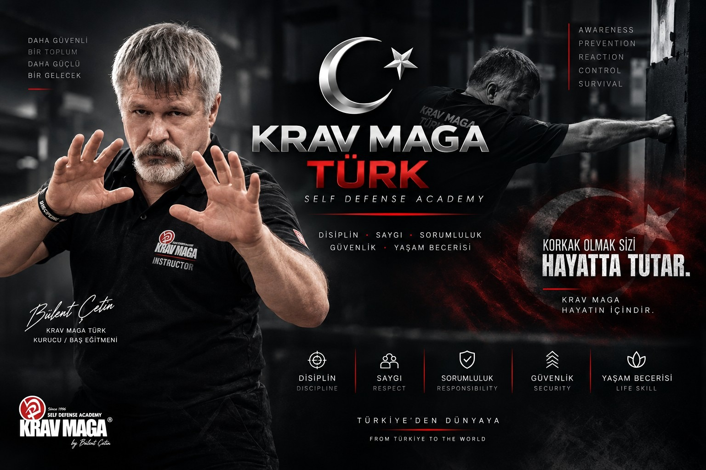

Krav Maga
Farkındalık, reaksiyon, mesafe ve gerçekçi öz savunma çalışmaları.
PROGRAM → KRAV MAGA TÜRK
KRAV MAGA TÜRK
EĞİTİM MODÜLLERİ
Başlangıç seviyesinden bireysel ve mesleki çalışmalara uzanan, amaca göre yapılandırılmış eğitim programları.
Farkındalık, reaksiyon, mesafe ve gerçekçi öz savunma çalışmaları.
PROGRAM →Mesleki güvenlik tecrübesiyle desteklenen koruma odaklı çalışmalar.
DETAY →Seviyeye, hedefe ve çalışma temposuna göre bireysel program.
BİLGİ AL →HAFTALIK PROGRAM
Katılım öncesinde güncel programı teyit edin.
SALI / PERŞEMBE19:30Başlangıç
ÇARŞAMBA19:30İleri seviye
“Amaç gösteri değil; fark etmek, uyum sağlamak ve kendini koruyabilmek.”
DOĞRULAMA MERKEZİ
Eğitim belgeleri ve öğrenci sicil işlemlerine tek noktadan ulaşın.